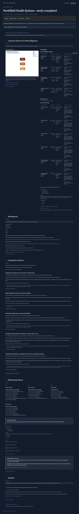
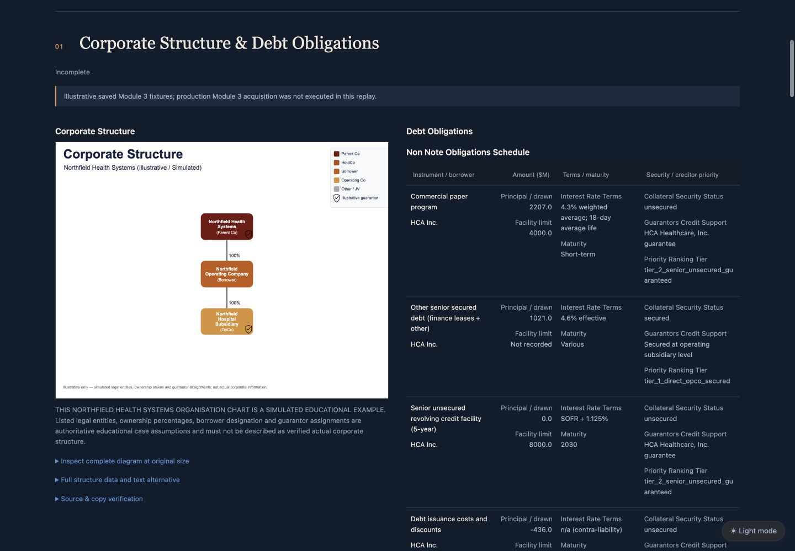
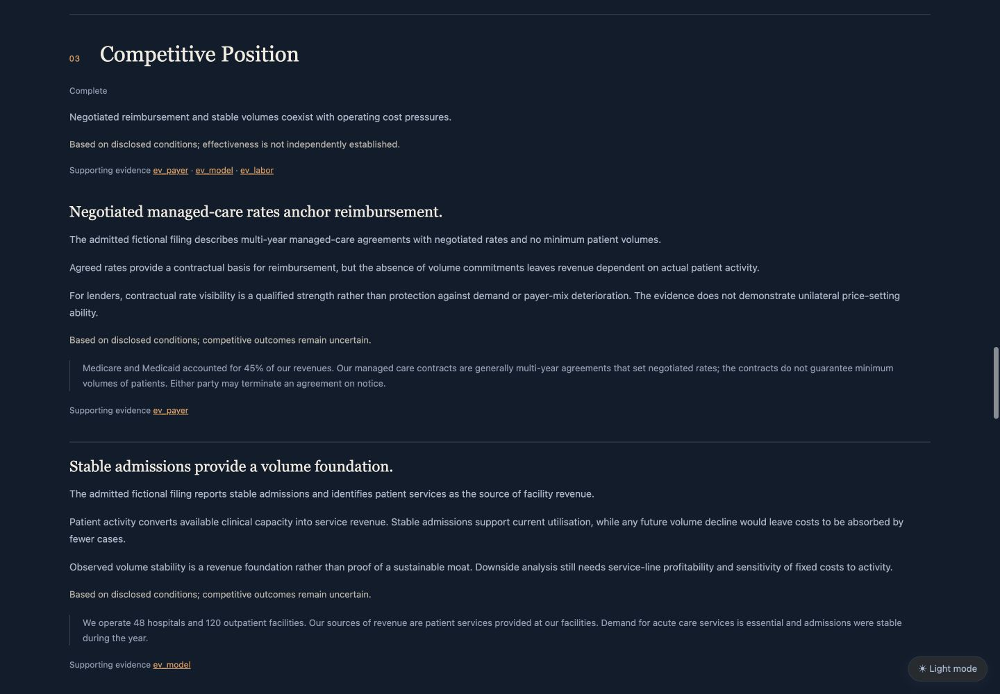
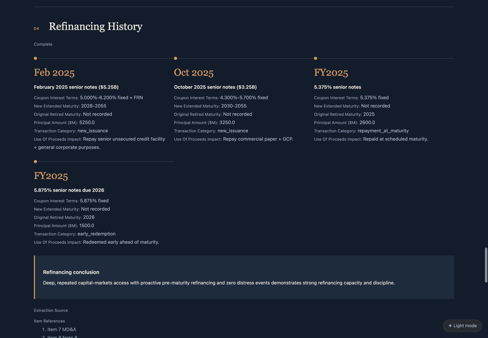
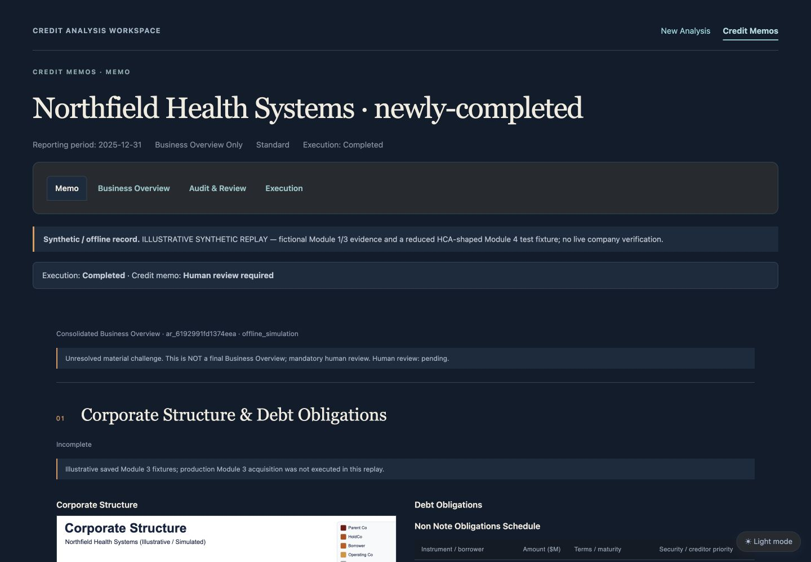
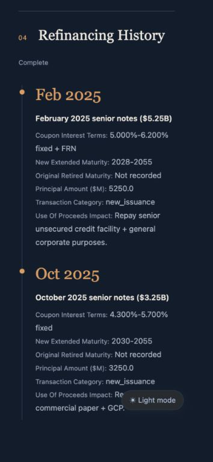
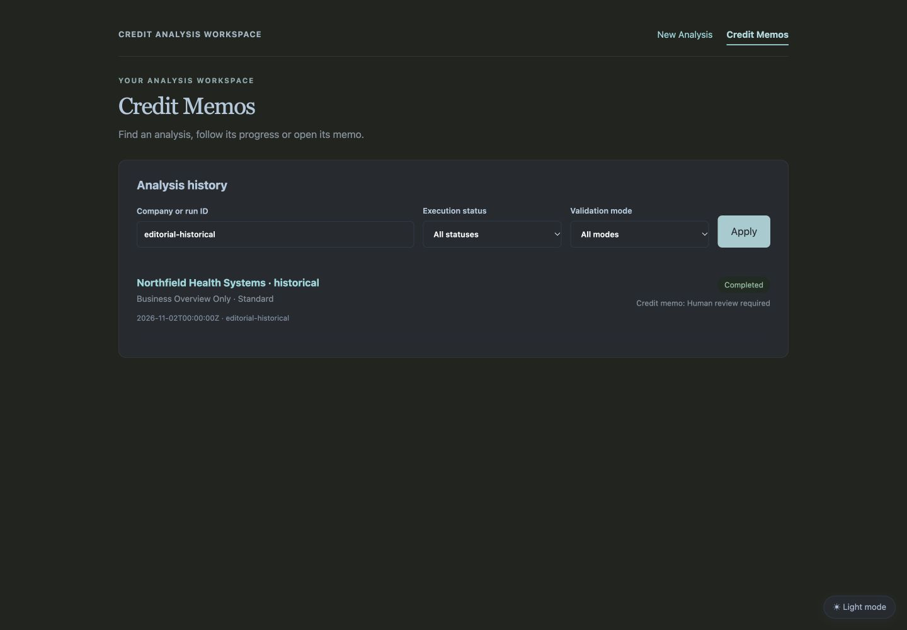

Actual browser captures of isolated, persisted offline fixtures through the application routes. Illustrative synthetic replay; no live verification or paid calls. Reference screenshots were absent: these captures demonstrate the written design, not exact reference matching.






